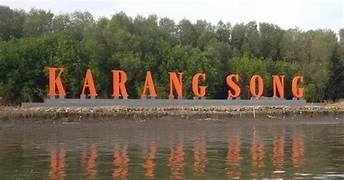
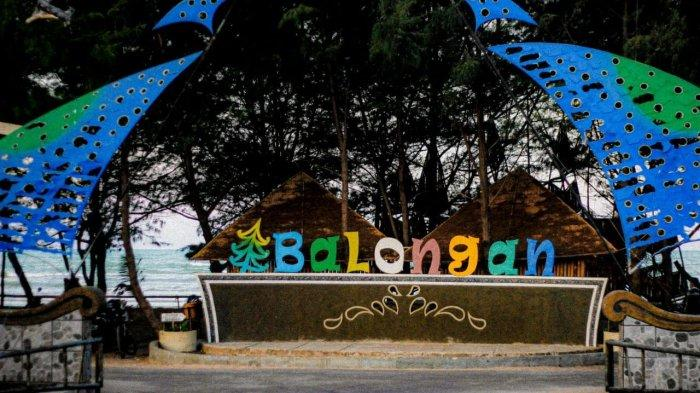

Sejarah

Di daerah Bagelen, Jawa Tengah, tepatnya di Banyu Urip, terdapat seorang Tumenggung bernama Gagak Singalodra.
Gagak Singalodra memiliki lima anak, di antaranya Raden Wangsanegara, Raden Ayu Wangsayuda, Raden Bagus Arya Wiralodra, Raden Bagus Tanujaya, dan Raden Bagus Tanujiwa.
Raden Bagus Wiralodra, putra ketiga Gagak Singalodra, memiliki tekad besar untuk membangun sebuah negara yang makmur dan sejahtera bagi rakyatnya, yang bisa diwariskan kepada generasi mendatang.
Raden Wiralodra menjalani tapa brata di Gunung Sumbing di perbukitan Melayu.
Setelah tiga tahun, ia mendapat wangsit yang mengatakan bahwa untuk mencapai kebahagiaan dan keturunan yang bahagia, ia harus merantau ke arah matahari terbenam dan menemukan lembah Sungai Cimanuk.
Raden Wiralodra kemudian kembali ke Banyu Urip dan berbagi wangsit ini kepada ayahnya, Gagak Singalodra. Ayahnya mendukung tekadnya dan memberikan saran agar membawa Ki Tinggil dalam perjalanannya.
Menurut data GIS Bapeda Kabupaten Indramayu, penggunaan lahan di wilayah ini terdiri dari 116.675 Ha tanah sawah irigasi, 87.336 Ha tanah kering, dan 92.795 Ha tanah sawah non irigasi.
Perjalanan Raden Wiralodra dan Ki Tinggil memakan waktu 3 tahun, dan mereka akhirnya sampai di sungai yang mereka kira Sungai Cimanuk.
Namun, setelah tidur semalam, mereka diberitahu oleh seorang kakek bahwa sungai ini sebenarnya adalah Sungai Citarum, dan mereka telah melewatkan Sungai Cimanuk yang mereka cari.
Geografis

Secara geografis, Kabupaten Indramayu terletak di antara 107° 52´ – 108° 36´ BT dan 6° 15´ – 6° 40´ LS, dengan batas wilayah sebagai berikut:
Di sebelah BARAT berbatasan dengan Kabupaten Subang.
Di sebelah TIMUR berbatasan dengan Laut Jawa dan Kabupaten Cirebon.
Di sebelah SELATAN berbatasan dengan Kabupaten Majalengka, Kabupaten Sumedang, dan Kabupaten Cirebon.
Di sebelah UTARA berbatasan dengan Laut Jawa.
Kabupaten Indramayu memiliki 31 Kecamatan, 309 desa, dan 8 kelurahan, dengan luas wilayah sekitar 2.040.110 Km persegi.
Garis pantai di wilayah ini mencapai 147 km dan melintasi pantai utara antara Cirebon-Subang, termasuk 36 desa pantai di 11 kecamatan.
Menurut data GIS Bapeda Kabupaten Indramayu, penggunaan lahan di wilayah ini terdiri dari 116.675 Ha tanah sawah irigasi, 87.336 Ha tanah kering, dan 92.795 Ha tanah sawah non irigasi.
Dalam hal topografi, wilayah Kabupaten Indramayu memiliki ketinggian umumnya antara 0 - 18 meter di atas permukaan laut, dengan dataran rendah berkisar antara 0 - 6 meter di atas permukaan laut, seperti rawa, tambak, sawah, dan pekarangan.
Sebagian besar wilayahnya adalah dataran dengan kemiringan antara 0% - 2%, yang mencakup sekitar 96,03% dari total luas wilayah.
Keadaan ini memengaruhi drainase, dengan risiko genangan air saat curah hujan tinggi dan risiko kekeringan selama musim kemarau.
Pada tahun 2010, jumlah penduduk Kabupaten Indramayu tercatat sebanyak 1.769.423 jiwa, dengan laki-laki sebanyak 885.345 jiwa dan perempuan sebanyak 884.078 jiwa.
Pada tahun 2011, jumlah penduduknya berkurang menjadi 1.675.790 jiwa, terdiri dari laki-laki 862.846 jiwa dan perempuan 812.944 jiwa.
Sementara pada tahun 2015, penduduknya meningkat menjadi 1.823.757 jiwa, dengan laki-laki 924.375 jiwa dan perempuan 899.382 jiwa.
Wisata
Jawa Barat memiliki sebuah kabupaten yang telah sukses mengoptimalkan potensi pariwisatanya dengan kolaborasi antara pemerintah daerah dan partisipasi masyarakat.
Kabupaten tersebut dikenal sebagai Indramayu. Jika Anda berkunjung ke Jawa Barat, pastikan untuk menjelajahi destinasi wisata yang variatif di Kabupaten Indramayu,
seperti pantai, taman, dan atraksi air. Berikut merupakan beberapa obyek wisata yang adaa indramayu.
karangsong

Salah satu destinasi wisata terbaru di Kabupaten Indramayu yang belum banyak diketahui adalah Hutan Mangrove Karangsong di Desa Karangsong.
Hutan ini sebenarnya berperan dalam mengurangi abrasi pantai Karangsong.
Hutan Mangrove Karangsong menawarkan pengalaman wisata yang edukatif, termasuk layanan penyewaan perahu untuk menjelajahi sekitar pantai.
Selama perjalanan, pengunjung dapat menjelajahi beragam flora dan fauna khas hutan mangrove, sehingga lebih memahami peran dan keragaman ekosistem mangrove ini.
Pantai Balongan Indah

Pantai Balongan Indah adalah destinasi yang tak boleh dilewatkan saat berkunjung ke Indramayu.
Terletak dengan akses yang mudah, pantai ini hanya sekitar 10 kilometer dari pusat kota Indramayu, sehingga Anda bisa mencapainya dalam sekitar 20 menit perjalanan dengan kendaraan.
Keindahan Pantai Balongan Indah tak hanya terletak pada pantainya yang luas dan panjang, namun juga pada kesempatan untuk menikmati matahari terbit dan terbenam.
Saat Anda berada di sana, mungkin Anda akan melihat kapal nelayan yang bersandar di tepi pantai, yang semakin menambah pesona pemandangan pantai ini.
Aggrowisata Situ Bolang

Agrowisata Situ Bolang, yang terletak di Desa Jatisura, Kecamatan Cikedung, Kabupaten Indramayu, telah menjadi daya tarik utama bagi para wisatawan.
Terletak di lahan perkebunan yang luas dan dilengkapi dengan berbagai fasilitas, tempat ini bukan hanya mengenalkan sektor pertanian, tetapi juga menampilkan pemandangan yang memukau, membuat liburan di sini lebih menarik.
Pemiliknya menjelaskan bahwa kebun wisata ini ditanami beragam tanaman, seperti anggur, mangga, kelengkeng, jambu kristal, hingga durian. Selama musim panen, pengunjung bahkan bisa mencicipi buah-buah tersebut secara langsung.
Di Agrowisata Situ Bolang, Anda juga akan menemukan sebuah menara dan jembatan yang mengelilingi area kebun, memberikan pengunjung kesempatan untuk melihat seluruh keindahan tempat ini yang dipenuhi dengan berbagai tanaman.
Selain menyediakan latar belakang kebun buah yang cocok untuk berfoto, Agrowisata Situ Bolang juga memiliki berbagai spot selfie yang sangat cocok untuk dipamerkan gaya terbaik para wisatawan.
Selain itu, tempat ini menawarkan pemandangan yang mengesankan karena berlokasi tepat di sebelah danau buatan Situ Bolang.
Meskipun menjadi daya tarik bagi para wisatawan, sayangnya akses jalan menuju Agrowisata Situ Bolang masih memiliki sejumlah titik yang rusak.
Pengelola berharap pemerintah setempat akan memberikan perhatian khusus untuk memperbaiki jalan-jalan ini sehingga pengunjung dapat menikmati liburan mereka dengan lebih nyaman.
Asal nama julukan kota Mangga

Julukan "Kota Mangga" diberikan kepada Kabupaten Indramayu berkat popularitas buah mangga, yang merupakan hasil bumi daerah tersebut.
Buah mangga ini, yang juga dikenal sebagai Mangga Cengkir atau Mangga Gedong gincu, berasal dari Indramayu dan sering disebut sebagai Mangga Indramayu.
Mangga Indramayu terkenal karena rasa manisnya saat matang dan tingkat keasaman yang tidak terlalu tinggi saat belum matang. Di Indramayu, kebun mangga umumnya menggunakan bibit hasil okulasi.
Oleh karena itu, Mangga Indramayu telah menjadi salah satu ciri khas dan identitas penting Kabupaten Indramayu, sehingga diberikan julukan "Kota Mangga."